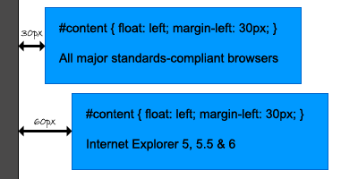

The double-margin float bug has been a source of irritation for CSS-loving web designers for years. The bug first became a major problem in IE5, when CSS started to become increasingly popular, and persisted through IE6. And, while an easy (if mysterious) fix has been known for quite some time now, it occurs to me that perhaps not everyone knows about it. So I thought it couldn’t hurt to toss another explanation out there.
So what is the double-margin float bug? It’s an Internet Explorer-exclusive bug wherein an element that is floated – and given a margin in the same direction as the float – ends up with twice the specified margin size. In other words, if you were to float an element to the left and give it a 20-pixel left margin, in IE the margin would actually be 40 pixels wide. It only happens when the margin is in the same direction as the float, but it happens to both left and right floats. At least IE is consistent in its inconsistency.
Obviously, this can be a pretty annoying problem. If, for example, you use floats to create columns (as I tend to do), this little bug can throw off your entire layout in Internet Explorer. Let’s say you create a wrapper div 800px wide, and then create two columns inside. You decide to float your columns left to get them next to one another, and then you give your leftmost column a margin to push it away from the edge of the wrapper. Assuming you’ve done your math right, this should work perfectly in every browser but IE. The ol’ blue beast, however, has doubled your left margin and thrown your columns completely out of whack.
Happily, the fix is extremely simple. All you have to do is apply a display: inline rule to your floated element. Seriously: that’s it. So you simply go from something like this:
#content {
float: left;
width: 500px;
padding: 10px 15px;
margin-left: 20px; }
To something like this:
#content {
float: left;
width: 500px;
padding: 10px 15px;
margin-left: 20px;
display: inline; }
And why does a display property fix our margin problem? Really, your guess is as good as mine. In all truthfulness, applying a display property to a float should do exactly nothing (unless it’s display: none, that is). Floats are by definition block-level elements, and cannot become inline elements. And even IE knows this – after you apply this rule all browsers including Internet Explorer will continue to treat your floats like block-level elements. But now IE will also start behaving itself when it comes to your margins.
However, that’s also what makes this fix so nice: you can apply it to your element and not have to worry about what other problems that might cause down the line. Floats can’t be inline elements, so the property does nothing harmful.
As I said previously, this fix has really been around for some time. You can read more about it at Position Is Everything, which also gives a bit of the history of the bug and some of the old-school workarounds web designers used before this little fix was discovered.
Pingback: Using CSS to Fix Anything: 20+ Common Bugs and Fixes
Pingback: CSS, IE bug | 亿顺之家
Pingback: Using CSS to Fix Anything: 20+ Common Bugs and Fixes | André Friedrichs' Web site
Pingback: All About Floats - CSS-Tricks
Pingback: Using CSS to Fix Anything: 20+ Common Bugs and Fixes at Serradinho Blog
Pingback: CSS float: considerações, dicas e macetes para bons layouts na web | desenvolvimento para web
Pingback: The Geek in ROC » Blog Archive » All About Floats
Pingback: All About Floats
Pingback: Colección Css (tutoriales): Layout, tables, forms, buttons… — WYDBLOG
Pingback: 20 CSS-решений распространенных багов и проблем при верстке сайта. Блог для вебмастеров
Pingback: 使用CSS修正一切：20多个常见Bug及其修正方法 | 前端观察
WOW! I should have come across this post before, it could have saved me 2 hours of trying to figure out the problem… Thank you very much!!! they need to disappear ie6 from every computer.
This is great! Thanks for posting this. Saved me a lot of time.
Oh! very thanks, i have this problem for many projects, now i van design faster!
Pingback: laura-lopes.com » Blog Archive » Como usar float em CSS
Pingback: Jun Blog » Using CSS to Fix Anything: 20+ Common Bugs and Fixes
Pingback: IE bugs? Fix them with CSS and Javascript at DCNY BLOG
Pingback: 11 steps to make your website cross browser compatible
Pingback: 7 IE Bugs & Hacks | Fresh
This is very usefull tag for double floating margin error
and a alternating tag this
.submit{
float:left; margin-left:10px;
}
replace this tag for alternating solution
.submit{
float:left; margin: 0px 0px 0px 10px;
this is alternating solution of double floating margin bug
Satish jat
}
That is rediculous. That is so easy I can’t believe I did not know it before hand. Stupid margin doubling in IE6 has been a vice of mine for a while. I have to keep this in lock and key. Thank you very much!
Pingback: Renoviert! » Guru 2.0
Pingback: purecss » Blog Archive » 使用CSS修正一切：20多个常见Bug及其修正方法
Pingback: purecss » Blog Archive » 使用CSS修正一切：20多个常见Bug及其修正方法
Pingback: » Estilo Float (CSS Style Float) | Como Criar Sites | Aprenda grátis como fazer seu site
Instead of using display:inline there is an easier and safer solution: using this simple js bug fix http://www.programmatorephp.it/jquery/ie6-double-margin-hack.php
Other solutions have some side effects.
Pingback: 蝴蝶飞过» Blog Archive » Using CSS to Fix Anything: 20+ Common Bugs and Fixes
Thanks for the quick tip. You saved this CSS newbie a lot of mental anguish. :)
Thanks for the fix. Thankfully this isn’t needed in IE7 and above..
Pingback: Using CSS to Fix Anything: 20+ Common Bugs and Fixes | www.my2tech.com
Pingback: All About Floats |
Pingback: All About Floats | E Marketing, Web Design, Web Develop, SEO and SEM Egypt Blog
Pingback: Using CSS to Fix Anything: 20+ Common Bugs and Fixes | Webmaster Tips
Pingback: Using CSS to Fix Anything: 20+ Common Bugs and Fixes | Webmaster Zone - Cyooh.com
Pingback: All About Floats | PHP Hosts
Pingback: 关于浮动| CSS| 前端观察
Pingback: Nuthin » Blog Archive » [转]All About Floats
Pingback: CSS浮动属性Float详解 | 帕兰映像
Pingback: [转载]CSS浮动属性Float详解
Great stuff. Personally I’ve alwasys used conditional comments, didn’t know about the display trick.
Pingback: Cross Browser Web Development | Van SEO Design
Pingback: RIA Worlds » 关于float解读和相关资料整理
Pingback: CSS修正20多个常见Bug的方法 | Web启点
Pingback: Using CSS to Fix Anything: 20+ Common Bugs and Fixes | qface & sowmo sky
Pingback: Fix Anything: 20+ Common Bugs and Fixes 【Part-A】
Pingback: 【转】使用CSS修正20多个常见页面Bug « My Happy Garden
Pingback: The Ultimate List of IE6 Fixes & Hacks « blog.mattsparks.com
I spend 1 day on this problem and tried the [display:inline-block] fix but that still did not work.
So I negative offset the div that is pushing all the other divs over and it worked. Play with negative values in margin until it looks right. Then test site in different browsers and different monitors.
My div that was offsetting everything is 300px wide and right-floated, it was pushing divs next to it to left. So I set it a left margin value of -250px and it justified. IE8 does not have double margin problem.
Pingback: 使用CSS修正一切：20多个常见Bug及其修正方法
Pingback: HTML / CSS Best Practices | Grad Innovations